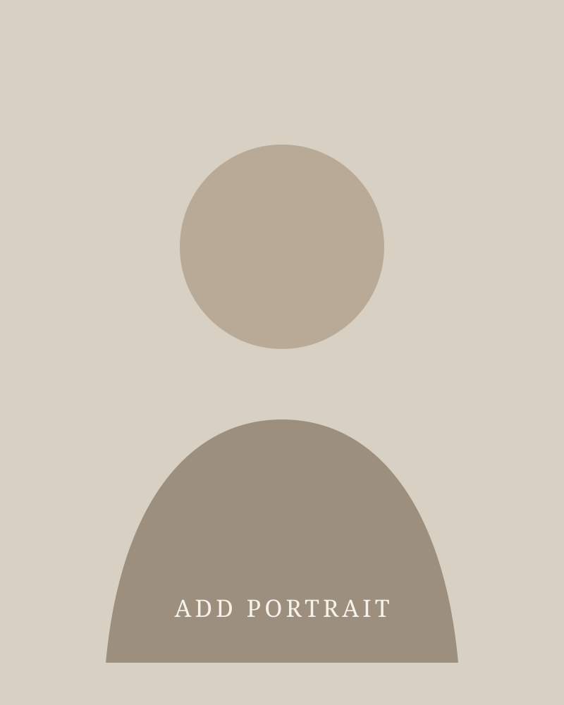

YouTube project
Add title, short description, and video link.
PRODUCER · FILMMAKER · EDITOR
I'm Sabrina, a New York City–based creative producer and filmmaker who loves bringing thoughtful ideas to life — from the first conversation to the final cut.
Explore selected work ↘
NEW YORK CITY · AVAILABLE FOR COLLABORATIONCurious by nature. Thoughtful by design. Always thinking a few steps ahead.
A SELECTION OF MY WORK
A mix of storytelling, editing, and production. More work and details can be added as projects are ready to share.
01 — STORYTELLING
Add your film stills, loglines, credits, festival selections, and links here.
02 — POST-PRODUCTION
Add title, short description, and video link.
Add title, short description, and video link.
Add title, short description, and video link.
Add title, short description, and video link.
Editing experience includes weekly YouTube videos for a creator with more than one million subscribers.
03 — EVENT PRODUCTION
Add selected wedding edits, event highlights, stills, and production credits here.
04 — PROMOTIONAL WORK
Add the project description, your role, visuals, and a link when ready.
A LITTLE ABOUT ME
STI'm Sabrina Torres, a producer and filmmaker with an MFA in Cinema Art, specializing in Directing. My experience spans video editing, camera operation, studio production, and live production.
I've edited weekly digital content, worked on wedding and event productions, operated cameras and broadcast equipment, and coordinated technical details in fast-moving live environments. I love collaborating with passionate people and helping shepherd a strong idea into something real.
HAVE A PROJECT IN MIND?
Based in New York City